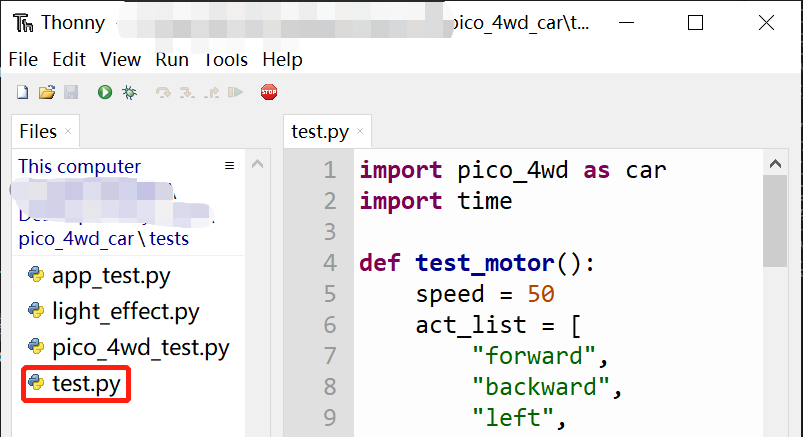
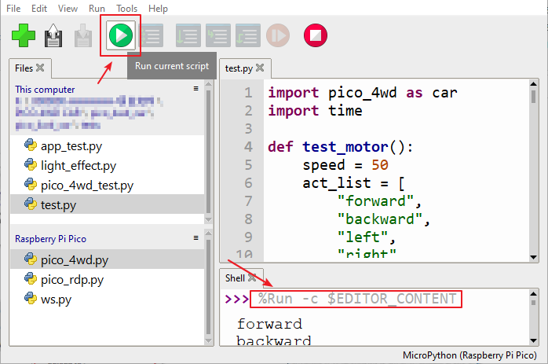
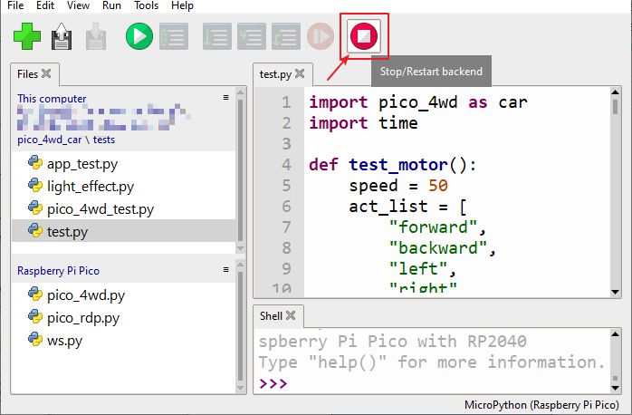
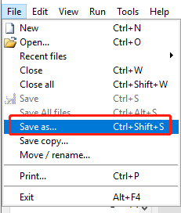
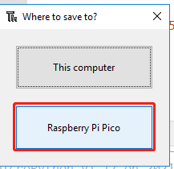
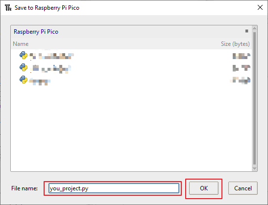
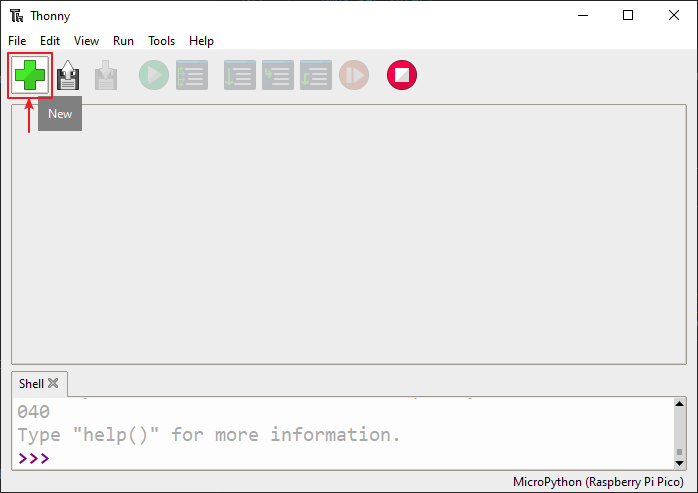
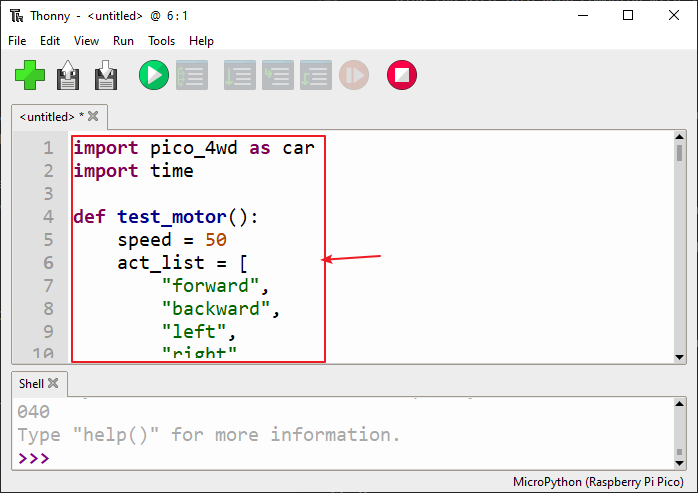

Open and Run the Code¶
In later chapters you will need to run the relevant code for the Raspberry Pi Pico. You can either open the .py file we provide directly or copy the corresponding code into the Thonny IDE to run it.
A detailed tutorial has been provided in this section, either way you can quickly run the code to see the results.
However, before running the code, you need to make sure that the relevant libraries have been uploaded to the Raspberry Pi Pico. For a detailed tutorial, please refer to Upload the Libraries to Pico.
Open and Run Code Directly¶
Where there is code that needs to be run, there are prompts for what .py file in what paths need to be opened, and you can open and run them.
But first you need to make sure you have downloaded the package and uploaded the library by referring to Download and Upload the Code.
Open Code
For example,
test.py.Double click on it and it will appear in a new window on the right, you can also open multiple codes at the same time.

Select Correct Interpreter
Plug the Pico into your computer with a micro USB cable and select the “MicroPython (Raspberry Pi Pico)” interpreter in the bottom right corner.

Run the Code
Click the Run current script button or just press F5 to run it.

If there is information in the code that needs to be printed, it will appear in the Shell; otherwise, only the following information will appear.
If the Shell window does not appear on your Thonny, you can click View -> Edit to open it.
MicroPython v1.17 on 2021-09-02; Raspberry Pi Pico with RP2040 Type "help()" for more information. >>> %Run -c $EDITOR_CONTENT
The first line prompts for the MicroPython version, the date, and your device information.
The second line suggests that you can type “help()” to get some help.
The third line is an instruction from Thonny telling the MicroPython interpreter on your Pico to run the contents of the script area - the ‘EDITOR_CONTENT’.
If there are any messages after the third line, they are usually the message you told MicroPython to print, or the error messages for the code.
Stop Running

Click the Stop/Restart backend button to stop the running code. After stopping, the
%RUN -c $EDITOR_CONTENTin the shell will disappear.Save or Save as
If you make changes to the open example, you can press
Ctrl+Sor click the Save button on Thonny to save it.If you want to save this code as a separate file inside the Raspberry Pi Pico, click File -> Save As.

Select Raspberry Pi Pico.

Then enter the file name and the extension
.py, and then click OK. You will then see your saved file on the Raspberry Pi Pico drive.
Note
You can save your code under any name, but it’s best to describe what kind of code it is, and don’t name it with meaningless names such as
abc.py. It is important to note that if you save the code file name asmain.py, it will run automatically when the power is turned on.
Create File and Run it¶
Again, in the code section, we show the code directly and you can copy it to Thonny and run it by the following method.
Create a new file
Open Thonny IDE, click New button to create a new blank file.

Copy Code
Copy the code from the project to the Thonny IDE.

Select Correct Interpreter
Plug the Pico into your computer with a micro USB cable and select the “MicroPython (Raspberry Pi Pico)” interpreter in the bottom right corner.
Run and Save the Code
You need click Run Current Script or simply press F5 to run it. If your code has not been saved, a window will pop up asking to save to This computer or Raspberry Pi Pico.

Note
When you tell Thonny to save your program on the Raspberry Pi Pico, if you unplug the Pico and plug it into someone else’s computer, your program is still saved on the Pico.
Choose the location you want to save, then enter the file name and the extension
.py, and then click OK.Note
You can save your code under any name, but it’s best to describe what kind of code it is, and don’t name it with meaningless names such as
abc.py. It is important to note that if you save the code file name asmain.py, it will run automatically when the power is turned on.When your program is saved, it will run automatically and you will see following information in the Shell area.
If the Shell window does not appear on your Thonny, you can click View -> Edit to open it.
MicroPython v1.17 on 2021-09-02; Raspberry Pi Pico with RP2040 Type "help()" for more information. >>> %Run -c $EDITOR_CONTENT
The first line prompts for the MicroPython version, the date, and your device information.
The second line suggests that you can type “help()” to get some help.
The third line is an instruction from Thonny telling the MicroPython interpreter on your Pico to run the contents of the script area - the ‘EDITOR_CONTENT’.
If there are any messages after the third line, they are usually the message you told MicroPython to print, or the error messages for the code.
Stop Running
Click the Stop/Restart backend button to stop the running code. After stopping, the
%RUN -c $EDITOR_CONTENTin the shell will disappear.Open File
If you want to open your saved code file, there are two ways:
The first is to click the open icon in the Thonny toolbar, just like when you save the program, you will be asked whether you want to open from This Computer or Raspberry Pi Pico, for example, click Raspberry Pi Pico and you will see a list of all programs you saved to your Pico.
The second one is to open the files preview directly by clicking View -> Files->, then double-clicking the corresponding
.pyfile to open it.